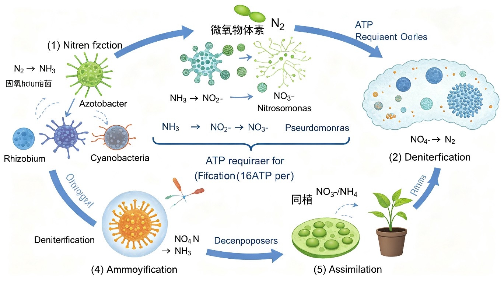

微生物在自然界的分布
一、土壤中的微生物
土壤是微生物活动的"大本营"，是自然界中微生物数量最多、种类最丰富的栖息地。其原因在于土壤为微生物提供了理想的生存条件：
- 营养丰富：含有动植物残体分解产生的有机质（C、N、P、S 等元素）和无机矿质营养
- 水分适宜：土壤颗粒间毛管水含溶解氧和养分，可供微生物利用
- 孔隙含氧：团粒结构中的孔隙充满空气，满足好氧微生物呼吸所需
- 酸碱度缓冲：土壤具有缓冲能力，pH 多在 5.5-8.5 之间，适合多数微生物生长
- 温度相对稳定：土壤具有保温性，温度日变化、季节变化均小于地表大气
垂直分布规律：微生物数量自地表向下呈递减趋势。表层 5-30 cm 处微生物数量最多（有机质丰富、通气良好），随深度增加，有机质减少、氧气耗竭，微生物数量急剧下降。
各类微生物数量排序（每克肥沃土壤）：
- 细菌 > 放线菌 > 真菌 > 藻类 > 原生动物
- 每克土壤含 10⁶-10⁹ 个微生物（细菌可达 10⁸-10⁹/g）
土壤微生物的主要生态作用：
- 分解有机物：将动植物残体分解为无机物，是自然界最重要的分解者
- 固氮作用：根瘤菌、固氮菌、蓝细菌将 N₂ 还原为 NH₃，补充土壤氮素
- 硝化作用：硝化细菌将 NH₃ 氧化为 NO₂⁻、NO₃⁻，形成植物可利用的氮源
- 硫循环：硫细菌参与硫化氢氧化和硫酸还原，维持硫素平衡
二、水体中的微生物
水体微生物包括淡水和海水中的微生物群落，其分布受有机物含量、盐度、温度、深度、溶解氧等因素影响。
淡水微生物：
- 分布：湖泊、河流、池塘、地下水等淡水环境
- 洁净水体中微生物数量少，以自养型微生物（如硫细菌、铁细菌、藻类）为主
- 受有机物污染时，异养菌数量激增，溶解氧下降，水质恶化
海水微生物：
- 嗜盐微生物：适应高盐环境（3.5% NaCl），如盐杆菌属（Halobacterium）
- 深海嗜压微生物：适应高静水压（可达 1000 atm），如嗜压菌属（Photobacterium）
- 深海热液口存在嗜热菌、化能无机自养菌，形成不依赖光合作用的深海生态系统
水质卫生指标——大肠菌群：
- 大肠杆菌数是评价水体是否受粪便污染的常用指标
- 大肠杆菌为肠道正常菌群，在肠道外环境中不繁殖但能存活，是理想的粪便污染指示菌
- >100 个/L 为污染；饮用水标准要求大肠菌群不得检出（或 <3 个/L）
水体富营养化（Eutrophication）：
- 氮、磷等营养盐过量排入水体 → 藻类大量繁殖 → 赤潮（海水）/ 水华（淡水）
- 藻类过度繁殖消耗溶解氧，死亡后被微生物分解进一步耗氧 → 鱼类大量死亡
三、空气中的微生物
空气不是微生物生长繁殖的场所，因为空气缺乏营养物质和水分，且紫外线强烈。但空气可以作为微生物传播的介质，微生物以气溶胶、飞沫核、附着于尘埃颗粒等形式悬浮于空气中。
空气中微生物的来源：
- 土壤尘埃飞扬：风吹扬起的土壤颗粒携带大量微生物
- 水面蒸发：水滴飞溅携带微生物进入空气
- 人和动物的活动：皮屑脱落、呼吸、咳嗽、喷嚏等
飞沫传播（咳嗽 / 喷嚏产生的飞沫核）：
- 结核杆菌（Mycobacterium tuberculosis）→ 肺结核
- 流感病毒（Influenza virus）→ 流行性感冒
- 其他：肺炎链球菌、脑膜炎奈瑟菌、麻疹病毒、冠状病毒等
空气中微生物的特征：
- 主要是革兰氏阳性菌（耐干燥，如微球菌、葡萄球菌、芽孢杆菌）——因其细胞壁肽聚糖层厚，抵抗干燥和紫外线能力强
- 芽孢是空气中最常见的微生物存活形式——耐热、耐干燥、耐紫外线，可长期存活
- 真菌孢子也广泛存在于空气中，是霉菌的主要传播方式
四、极端环境微生物
极端环境微生物（extremophiles）是指在高温、低温、高酸、高碱、高盐、高压等极端环境下生存的微生物，多数属于古菌（Archaea）。极端环境微生物的研究对生命起源、地外生命探索及生物技术（如 PCR 中使用的 Taq 酶）具有重要意义。
- 嗜热菌（thermophiles）：生长温度 >45℃，最适 65-80℃；超嗜热菌 >80℃。热泉、深海热液口（>75℃）。代表：水生栖热菌（Thermus aquaticus）→ Taq DNA 聚合酶（PCR 核心酶）。古菌中延胡索酸火叶菌可在 113℃ 生长
- 嗜冷菌（psychrophiles）：最适生长温度 <15℃，最高 <20℃。极地、冰川、深海。细胞膜富含不饱和脂肪酸，保持低温下的膜流动性
- 嗜酸菌（acidophiles）：最适 pH <3，甚至 pH 0-1。酸性矿水、火山酸性热泉（pH<2）。代表：氧化亚铁硫杆菌（Acidithiobacillus ferrooxidans）、嗜酸热原体（Thermoplasma acidophilum）。细胞内保持中性 pH，质膜具有质子不透性
- 嗜碱菌（alkaliphiles）：最适 pH >9，甚至 pH 10-12。碱湖（如东非大裂谷碱湖 pH>10）。代表：坚强芽孢杆菌（Bacillus firmus）。细胞内维持中性偏酸，质膜具有 Na⁺/H⁺ 反向转运系统
- 嗜盐菌（halophiles）：需高浓度 NaCl（>2.5 mol/L，即 >15%）才能生长。盐湖、盐田、死海。代表：盐杆菌属（Halobacterium），细胞内积累 K⁺ 以维持渗透平衡，含细菌紫膜质可进行光驱动质子泵
- 嗜压菌（barophiles / piezophiles）：需高静水压（>100 atm）才能生长。深海（深度 >4000 m，静水压 400-1000 atm）。细胞膜富含多不饱和脂肪酸以维持高压下的膜流动性
五、人体微生物（正常菌群）
正常菌群（normal flora）是指存在于人体体表及与外界相通的腔道（皮肤、口腔、肠道、呼吸道、泌尿生殖道）中，在正常情况下对人体无害甚至有益的微生物群落。人体携带的微生物细胞总数约为 10¹⁴ 个，是人体细胞总数（约 10¹³）的 10 倍。
各部位的正常菌群：
- 皮肤：葡萄球菌（Staphylococcus，如表皮葡萄球菌）、丙酸杆菌（Propionibacterium，如痤疮丙酸杆菌）、微球菌、棒状杆菌
- 口腔：链球菌（Streptococcus，如变异链球菌 → 龋齿）、放线菌（Actinomyces）、乳酸菌、念珠菌
- 肠道：拟杆菌（Bacteroides，数量最多）、大肠杆菌（E. coli）、乳酸菌（Lactobacillus）、双歧杆菌（Bifidobacterium）——数量最多，约 10¹⁴ 个
- 呼吸道上段：葡萄球菌、链球菌、奈瑟菌；下呼吸道（健康时）基本无菌
- 泌尿生殖道：乳酸杆菌（维持阴道酸性环境，pH 3.8-4.5）
正常菌群的生理功能：
- 拮抗病原菌：正常菌群占据生态位、消耗营养、产生细菌素/有机酸等抑制物，阻止病原菌定殖（竞争性排斥）
- 合成维生素：肠道菌群合成维生素 K、维生素 B 族（B₁₂、叶酸、生物素等），供人体吸收利用
- 免疫训练：刺激免疫系统发育，维持免疫耐受和免疫应答的平衡；无菌动物的免疫系统发育不良
- 促进消化吸收：分解膳食纤维产生短链脂肪酸（SCFA），促进肠上皮细胞能量代谢
微生物之间的相互关系
一、种群间相互作用概述
微生物之间的相互关系是指不同种群微生物在同一生境中共存时，彼此之间产生的有利（+）、不利（-）或无影响（0）的生态效应。根据双方受益/受害情况，可将微生物间的相互关系分为 7 种基本类型，是竞赛必考知识点。
符号含义：
- + 表示该方受益（生长促进、获得营养等）
- - 表示该方受害（生长受抑、被杀伤等）
- 0 表示该方不受影响
判断微生物间相互关系的核心在于：分析 A 方和 B 方各自从关系中获得的效应，然后对照 7 种关系类型的定义进行归类。
二、七种相互关系对比表（竞赛必考）
| 关系类型 | A 方 | B 方 | 特征描述 | 典型举例 |
|---|---|---|---|---|
| 中性关系 （neutralism） |
0 | 0 | 两种微生物互不影响，各自独立生活。实际中较少见，多发生于密度很低、资源充足的微环境中 | 不同细菌生活在不同的微环境中，互不接触 |
| 偏利关系 （commensalism） |
+ | 0 | A 方受益，B 方不受影响。A 方从 B 方的存在或代谢产物中获得有利条件，但 B 方无变化 | 正常菌群消耗 O₂ → 形成微厌氧环境 → 专性厌氧菌得以生长 |
| 互利共生 （mutualism） |
+ | + | 双方均受益，且关系密切、不可分离，分开后双方或一方不能独立生存。是最高程度的互惠关系 | 根瘤菌-豆科植物（固氮）、地衣（真菌-藻类共生体） |
| 共生 （symbiosis） |
+ | + | 两种生物共同生活，双方受益，但关系可分离（分开后仍可各自生存），较互利共生松散 | 肠道菌群-人体（正常菌群与宿主的共生关系） |
| 寄生关系 （parasitism） |
+ | - | A 方（寄生者）受益，从 B 方（宿主）体内或体表获取营养；B 方受害，被损害甚至死亡 | 噬菌体-细菌（裂解性感染）、病原菌-宿主 |
| 拮抗关系 （antagonism） |
+ | - | A 方产生抑制物（抗生素、细菌素、毒素等）→ 抑制或杀灭 B 方。A 方从中获益（减少竞争），B 方受害 | 青霉菌产生青霉素 → 抑制革兰氏阳性细菌生长 |
| 捕食关系 （predation） |
+ | - | A 方（捕食者）以 B 方（猎物）为食，直接吞食或侵入 B 方体内获取营养 | 蛭弧菌寄生细菌、原生动物（如变形虫）吞食细菌 |
- 互利共生 vs 共生：互利共生"不可分离"（地衣中真菌和藻类分开均不能正常生存）；共生"可分离"（肠道菌群离开人体仍可在体外培养）
- 寄生 vs 拮抗：寄生是 A 直接从 B 体内获取营养（噬菌体侵入细菌繁殖）；拮抗是 A 产生抑制物间接抑制 B（青霉菌分泌青霉素扩散到环境中）
- 寄生 vs 捕食：寄生通常不立即杀死宿主（噬菌体-细菌中的溶源性状态）；捕食通常直接杀死猎物（原生动物吞噬细菌）
微生物与物质循环
一、碳循环
碳循环（Carbon cycle）是生物圈中最基本的物质循环之一。微生物在碳循环中扮演分解者的核心角色，将有机碳最终分解为 CO₂ 回归大气，完成碳素的生物地球化学循环。
碳循环的基本过程：
- CO₂ →（光合作用 / 化能合成）→ 有机碳（糖类、脂质、蛋白质等）→ 组成生物体
- 有机碳 →（微生物分解 / 呼吸作用）→ CO₂ 回归大气
微生物在碳循环中的关键环节：
- 纤维素分解：纤维素 → 纤维二糖 → 葡萄糖。由纤维素酶（内切葡聚糖酶 + 外切葡聚糖酶 + β-葡萄糖苷酶）催化。分解纤维素的微生物：真菌（木霉 Trichoderma）、细菌（纤维单胞菌 Cellulomonas）、放线菌。牛羊瘤胃中也存在共生的纤维素分解菌
- 木质素分解：木质素是植物次生壁中复杂的芳香族聚合物，极难降解。白腐菌（white rot fungi，如黄孢原毛平革菌 Phanerochaete chrysosporium）分泌木质素过氧化物酶（LiP）和锰过氧化物酶（MnP），是自然界中降解木质素能力最强的微生物
- 厌氧条件下的产甲烷作用：在缺氧环境（稻田、湿地、沼泽、反刍动物瘤胃、污泥消化池）中，有机物经厌氧微生物逐级分解为乙酸、CO₂、H₂ → 最终由产甲烷菌（methanogens，属古菌）转化为甲烷（CH₄）。
反应式：CO₂ + 4H₂ → CH₄ + 2H₂O；CH₃COOH → CH₄ + CO₂
稻田甲烷排放：水稻田是大气甲烷的重要人为排放源。稻田淹水形成厌氧环境，土壤有机物经厌氧分解产生甲烷，经水稻植株通气组织排放至大气。甲烷是重要的温室气体（GWP 约为 CO₂ 的 28 倍）。
二、氮循环（竞赛重点）
氮循环（Nitrogen cycle）是竞赛考查频率最高的物质循环，包含 5 个关键环节。微生物几乎参与了氮循环的全部环节，是维持生态系统氮素平衡的核心。
氮循环的 5 个关键环节：
- 固氮作用（Nitrogen fixation）：N₂ → NH₃。由固氮微生物催化，是大气氮进入生物圈的唯一途径。
固氮微生物包括：①自生固氮菌（固氮菌属 Azotobacter、梭菌属 Clostridium）②共生固氮菌（根瘤菌 Rhizobium-豆科植物）③联合固氮菌（固氮螺菌 Azospirillum）④蓝细菌（异形胞内固氮，如鱼腥藻 Anabaena）。
固氮酶（nitrogenase）特点：对氧极其敏感，需在低氧环境下发挥作用（异形胞即为蓝细菌为固氮酶提供的低氧微环境） - 氨化作用（Ammonification）：有机氮（蛋白质、核酸、尿素等）→ NH₃。由氨化细菌（分解蛋白质、尿素等的细菌）催化。如变形杆菌分解蛋白质产生 NH₃；尿素细菌分解尿素产生 NH₃（CO(NH₂)₂ + H₂O → 2NH₃ + CO₂）
- 硝化作用（Nitrification）：NH₃ → NO₂⁻ → NO₃⁻。分两步，由化能无机自养型细菌完成：
①亚硝化菌（如亚硝化单胞菌 Nitrosomonas）：2NH₃ + 3O₂ → 2NO₂⁻ + 2H⁺ + 2H₂O（产能）
②硝化菌（如硝化杆菌 Nitrobacter）：NO₂⁻ + ½O₂ → NO₃⁻（产能）
硝化细菌为化能无机自养型——以无机物氧化产能，以 CO₂ 为唯一碳源 - 反硝化作用（Denitrification）：NO₃⁻ → NO₂⁻ → NO → N₂O → N₂。由反硝化细菌（如假单胞菌 Pseudomonas denitrificans、副球菌 Paracoccus）在厌氧条件下进行。以 NO₃⁻ 代替 O₂ 作为电子受体进行无氧呼吸。反硝化作用导致土壤氮素损失（N₂ 回归大气），降低农田氮肥利用率
- 同化作用（Assimilation）：NH₃ / NO₃⁻ → 有机氮。由植物和微生物将无机氮同化为氨基酸、蛋白质等有机氮化合物，进入生物体

（蛋白质/核酸/尿素） ←②氨化作用← NH₃ / NH₄⁺ →③硝化作用→ NO₂⁻ → NO₃⁻
三、硫循环
硫循环（Sulfur cycle）中微生物主要参与硫化物的氧化和还原过程，对硫素的生物地球化学循环至关重要。
硫循环的两个方向：
- 硫氧化（无机硫化物氧化）：H₂S → S → SO₄²⁻。由硫氧化细菌（化能无机自养型）催化。
代表菌：硫杆菌（Thiobacillus）、贝日阿托氏菌（Beggiatoa）、发硫菌（Thiothrix）。
反应：H₂S + ½O₂ → S + H₂O；S + 1½O₂ + H₂O → H₂SO₄（产能） - 硫还原（硫酸盐还原）：SO₄²⁻ → H₂S。由硫酸还原菌（如脱硫弧菌 Desulfovibrio）在厌氧条件下进行，以 SO₄²⁻ 作为电子受体进行无氧呼吸，产生 H₂S（具有臭鸡蛋气味）
硫杆菌与酸性矿水（AMD）：
- 氧化亚铁硫杆菌（Acidithiobacillus ferrooxidans）能氧化硫化物（黄铁矿 FeS₂）和 Fe²⁺，产生硫酸
- 2FeS₂ + 7½O₂ + H₂O → 2Fe³⁺ + 4SO₄²⁻ + 2H⁺（强酸性产物）
- 导致酸性矿水（AMD），pH 降至 1-2，造成严重环境酸化污染
- 同时该菌可用于生物浸矿（bioleaching）——利用微生物氧化矿石中的金属硫化物，浸出铜、金、铀等金属
四、磷循环
磷循环（Phosphorus cycle）较为简单，因为磷在自然界中不存在气态形式。微生物主要参与有机磷的矿化和不溶性磷酸盐的溶解。
- 有机磷矿化：有机磷（核酸、磷脂、植酸等）→ 无机磷（PO₄³⁻）。由磷细菌（如巨大芽孢杆菌 Bacillus megaterium var. phosphaticum）分泌磷酸酶催化分解
- 不溶性磷酸钙溶解：Ca₃(PO₄)₂（不溶性）→ 可溶性磷酸盐（HPO₄²⁻、H₂PO₄⁻）。溶解磷的微生物产生有机酸、无机酸或 CO₂，降低 pH，使难溶性磷酸盐溶解为植物可吸收的形式
磷循环的微生物过程对土壤磷素有效性具有重要意义，是农业生产中解磷菌肥的理论基础。
五、铁循环
铁循环（Iron cycle）中微生物参与 Fe²⁺ 与 Fe³⁺ 之间的价态转换。
- 铁氧化：Fe²⁺ → Fe³⁺。由铁氧化细菌（如氧化亚铁硫杆菌 Acidithiobacillus ferrooxidans、嘉利翁氏菌 Gallionella、纤发菌 Leptothrix）催化，在好氧条件下进行。2Fe²⁺ + ½O₂ + 2H⁺ → 2Fe³⁺ + H₂O（产能，化能无机自养）
- 铁还原：Fe³⁺ → Fe²⁺。由铁还原菌在厌氧条件下进行，以 Fe³⁺ 作为电子受体进行无氧呼吸
铁氧化细菌在湿地、沼泽中常形成铁锈色沉积物（氢氧化铁 Fe(OH)₃）。同时也是 AMD 形成的重要参与者。
微生物与环境污染
一、水体污染
水体污染是微生物生态学关注的重要环境问题，微生物既可能是污染的指示者，也可能是污染的加剧者或治理者。
有机物污染与 BOD：
- 大量有机物（生活污水、工业废水）排入水体 → 异养微生物大量繁殖分解有机物 → 消耗水中溶解氧（DO）
- BOD（Biochemical Oxygen Demand，生化需氧量）：在一定条件下，微生物分解水中有机物所消耗的溶解氧量，是衡量水体有机物污染程度的综合指标
- BOD₅：20℃ 下 5 日生化需氧量，是标准检测方法。BOD₅ >10 mg/L 为严重污染；清洁水体 BOD₅ <1 mg/L
- BOD 升高 → 溶解氧下降 → 水生生物（鱼虾）窒息死亡 → 水质恶化
富营养化（Eutrophication）：
- N、P 等营养盐过量排入水体（来自生活污水、农田径流、工业废水）→ 藻类爆发性繁殖
- 海水：赤潮（red tide）——甲藻、硅藻等大量繁殖，水体变红
- 淡水：水华（water bloom）——蓝细菌（微囊藻、鱼腥藻）、绿藻大量繁殖，水面形成蓝绿色藻层
- 后果：藻类覆盖水面遮光 → 藻类死亡后被微生物分解耗氧 → 缺氧 → 鱼类大量死亡；部分蓝细菌产生微囊藻毒素，危害人畜饮水安全
二、大气污染
微生物活动可产生多种大气污染物，其中以甲烷（CH₄）最为重要。
- 甲烷排放：产甲烷菌在厌氧条件下分解有机物产生 CH₄。
主要来源：①稻田（淹水厌氧环境）②反刍动物瘤胃（牛、羊等反刍动物瘤胃中的产甲烷菌）③湿地、沼泽④垃圾填埋场⑤污水处理厂厌氧消化池
甲烷是第二大温室气体，GWP（全球变暖潜势）约为 CO₂ 的 28 倍 - 氨气（NH₃）和硫化氢（H₂S）：微生物分解含氮有机物（蛋白质）产生 NH₃；分解含硫有机物（含硫氨基酸）产生 H₂S。两者均为恶臭气体，是垃圾处理场、养殖场恶臭的主要来源
- 挥发性有机物（VOCs）：某些微生物代谢产生挥发性有机物，参与大气化学反应
三、土壤污染
土壤污染主要包括农药残留和重金属污染两大类，微生物在这些污染物的转化和降解中发挥重要作用。
农药残留的微生物降解：
- DDT（有机氯农药）：持久性有机污染物（POPs），半衰期长，可在环境中长期残留。部分微生物（如假单胞菌、芽孢杆菌）可逐步脱氯降解 DDT，但速度缓慢
- 有机磷农药（如马拉硫磷、对硫磷）：微生物分泌的磷酸酶、水解酶可切断 P-O、P-S 键，将有机磷农药降解为低毒或无毒产物
- 降解基因：部分降解酶基因位于质粒上（如 CAM 质粒降解樟脑，OCT 质粒降解烷烃），可通过基因水平转移扩展降解能力
重金属污染与微生物转化：
- 微生物不能降解重金属（元素不能被破坏），但可通过富集、吸附、转化改变其形态和毒性
- 微生物细胞壁含有大量官能团（-COOH、-NH₂、-SH），可吸附重金属离子（生物吸附）
- 汞的甲基化：在厌氧条件下，微生物（如假单胞菌、产甲烷菌）将 Hg²⁺ 转化为 CH₃Hg（甲基汞）——这是重金属微生物转化中最具生态危害性的过程
四、甲基汞与水俣病
水俣病（Minamata disease）是世界著名的公害病之一，是微生物参与重金属转化造成环境危害的典型案例。
甲基汞的形成机制：
- 工业废水中的无机汞（Hg²⁺）排入水体
- 在底泥的厌氧条件下，微生物（假单胞菌、产甲烷菌等）将 Hg²⁺ 甲基化 → 生成 CH₃Hg（甲基汞）
- Hg²⁺ + 甲基供体（如甲基钴胺素）→ CH₃Hg⁺
甲基汞的生态危害：
- 脂溶性强：甲基汞为有机汞，脂溶性远高于无机汞，易透过生物膜（血脑屏障、胎盘屏障）
- 生物富集（bioaccumulation）：甲基汞在生物体内蓄积，不易排出
- 食物链放大（biomagnification）：随食物链营养级升高，甲基汞浓度逐级放大 → 顶级消费者（肉食鱼、人）体内浓度最高
- 水中浮游生物 → 小鱼 → 大鱼 → 人：浓度可放大 10⁴-10⁵ 倍
水俣病事件：
- 地点：日本熊本县水俣湾
- 时间：1956 年爆发
- 原因：氮素公司（Chisso 公司）排放含汞废水 → 底泥中微生物将汞甲基化 → 甲基汞经鱼贝类富集 → 居民食用后中毒
- 症状：中枢神经系统损害（共济失调、视野缩小、听力障碍、言语障碍、肢体麻木），严重者死亡；孕妇通过胎盘传递给胎儿（先天性水俣病）
五、酸性矿水（AMD）
酸性矿水（Acid Mine Drainage, AMD）是矿业活动引发的严重环境问题，其形成过程中微生物发挥了关键的催化加速作用。
AMD 的形成机制：
- 煤矿和金属矿开采过程中，含黄铁矿（FeS₂）的矿石暴露于空气和水中
- 黄铁矿化学氧化：2FeS₂ + 7O₂ + 2H₂O → 2Fe²⁺ + 4SO₄²⁻ + 4H⁺（产生酸）
- 氧化亚铁硫杆菌（Acidithiobacillus ferrooxidans）催化加速 Fe²⁺ → Fe³⁺ 的氧化：4Fe²⁺ + O₂ + 4H⁺ → 4Fe³⁺ + 2H₂O
- Fe³⁺ 进一步氧化 FeS₂ 并水解产酸：FeS₂ + 14Fe³⁺ + 8H₂O → 15Fe²⁺ + 2SO₄²⁻ + 16H⁺
- 最终产生大量 H₂SO₄，pH 降至 1-2，造成严重酸化
AMD 的环境危害：
- 强酸性（pH 1-2）严重污染地表水和地下水
- 高浓度重金属（Fe、Cu、Zn、Pb、Al 等）在酸性条件下溶解度增大，毒性增强
- 黄红色氢氧化铁沉淀覆盖河床，破坏水生生态系统
微生物的双重角色：氧化亚铁硫杆菌既是 AMD 形成的"元凶"（加速酸化），也是生物浸矿的"功臣"——利用其氧化硫化矿物的能力浸出铜、金、铀等金属。
微生物与环境治理
一、污水生物处理
污水生物处理是利用微生物的代谢活动降解和去除污水中有机污染物的方法，具有成本低、效果好、二次污染少等优点，是现代污水处理的核心技术。
1. 活性污泥法（Activated Sludge Process）：
- 原理：在曝气池中，污水与含有大量微生物的活性污泥混合，持续通入空气（好氧条件）
- 活性污泥：由细菌、原生动物、真菌等组成的微生物絮凝体（呈褐色絮状），具有吸附和氧化分解有机物的能力
- 过程：污水 → 曝气池（微生物吸附+分解有机物）→ 二沉池（絮凝体沉淀分离）→ 上清液排放 / 部分污泥回流
- 关键微生物：菌胶团细菌（如动胶菌 Zoogloea，形成絮凝体骨架）、原生动物（钟虫、盖虫等，吞食游离细菌，指示处理效果）
2. 生物膜法（Biofilm Process）：
- 原理：微生物附着在固体载体（碎石、塑料填料、滤料）表面形成生物膜，污水流经生物膜时有机物被降解
- 形式：生物滤池、生物转盘、生物接触氧化池
- 生物膜结构：从外到内分为好氧层和厌氧层，脱落的生物膜随水流出后沉淀分离
3. 厌氧消化（沼气发酵，Anaerobic Digestion）：
- 原理：在厌氧条件下，厌氧微生物将有机物分阶段分解，最终产生CH₄ + CO₂（沼气）
- 四个阶段：①水解阶段（大分子有机物 → 小分子）②产酸阶段（发酵产酸菌 → 有机酸、醇、H₂、CO₂）③产乙酸阶段（产乙酸菌 → 乙酸、CO₂、H₂）④产甲烷阶段（产甲烷菌，古菌 → CH₄ + CO₂）
- 产甲烷菌为严格厌氧古菌，是厌氧消化的最终环节和限速步骤
- 应用：污泥消化、农村沼气池、有机垃圾处理
4. 氧化塘（Oxidation Pond）：
- 利用藻类-细菌共生系统处理污水
- 细菌分解有机物产生 CO₂、NH₃ → 藻类光合作用吸收 CO₂、NH₃ 并释放 O₂ → 细菌利用 O₂ 继续分解有机物
- 形成细菌-藻类互利共生关系，是典型生态学原理在环境治理中的应用
二、废气生物处理
废气生物处理是利用微生物降解废气中污染物的方法，适用于低浓度、可生物降解的废气。
- 生物过滤法（Biofilter）：废气通过填充有生物活性介质（堆肥、土壤、木屑等，附着微生物）的滤床，微生物吸附并降解废气中的有机污染物和 H₂S、NH₃ 等恶臭气体
- 生物洗涤法（Bioscrubber）：废气先经吸收液吸收，再进入活性污泥反应器降解
- 生物滴滤法（Biotrickling filter）：废气通过填充塔，塔内循环喷淋含微生物的营养液
微生物降解有机废气 → CO₂ + H₂O；降解 H₂S → S / SO₄²⁻；降解 NH₃ → NO₂⁻ / NO₃⁻。生物过滤法具有投资少、运行费用低、无二次污染等优点。
三、固体废物生物处理
固体废物生物处理利用微生物分解固体有机废物，实现减量化、无害化和资源化。
- 堆肥（Composting）：在好氧条件下，微生物分解有机固体废物（厨余垃圾、农业废弃物、污泥等），产生稳定的腐殖质类有机肥。
过程：中温菌（适应期）→ 高温菌（高温期，50-70℃，杀灭病原菌和虫卵）→ 腐熟期（降温，腐殖质形成）
堆肥产品可作有机肥料或土壤改良剂，是固体废物资源化的典型方式 - 卫生填埋（Sanitary Landfill）：将垃圾填埋后覆土压实，利用厌氧微生物分解有机物产生渗滤液和填埋气（CH₄ + CO₂）。填埋气可收集发电，渗滤液需处理达标后排放
四、生物修复（Bioremediation）
生物修复（Bioremediation）是指利用微生物（或植物、动物）降解环境中的污染物，使其浓度降低到安全水平以下的环境治理技术，是微生物生态学在环境治理中的核心应用。
生物修复的原理：
- 利用土著微生物或投加的外源微生物的代谢能力，将有机污染物完全降解为 CO₂ + H₂O + 无机盐（矿化作用）
- 适用于石油烃、农药、多氯联苯（PCBs）、炸药、溶剂等多种有机污染物的治理
石油污染的生物修复：
- 石油主要成分为碳氢化合物（烷烃、芳烃等），可被烃降解菌（hydrocarbon-degrading bacteria）分解
- 烃降解菌：假单胞菌（Pseudomonas）、不动杆菌（Acinetobacter）、食油假丝酵母（Candida）、红球菌（Rhodococcus）
- 降解途径：石油烃 → 醇 → 醛 → 脂肪酸 → β-氧化 → 乙酰 CoA → 三羧酸循环 → CO₂ + H₂O
- 烃降解菌常含质粒编码的降解酶（如 CAM 质粒、OCT 质粒）
强化生物修复的方式：
- 生物刺激（Biostimulation）：向污染环境添加营养物（N、P 肥料）、电子受体（O₂、NO₃⁻、SO₄²⁻）等，刺激土著微生物的降解活性
- 生物强化（Bioaugmentation）：向污染环境投加外源优势降解菌种，提高降解效率
- 投加基因工程菌（携带高效降解基因的重组菌）
生物修复的优势与局限：
- 优势：原位处理、成本低、环境友好、不产生二次污染
- 局限：降解速度慢、受环境条件（温度、pH、营养）限制、对重金属和某些难降解有机物无效
真题链接
一、历年联赛真题考点分析
微生物生态是联赛与竞赛的重要考查内容，考点集中在物质循环（尤其是氮循环）、微生物相互关系、环境污染与治理三大模块。以下梳理高频考点及答题策略。
考点 1：氮循环各环节微生物的作用
- 要求识别固氮、氨化、硝化、反硝化、同化各环节的微生物类型及代谢特征
- 重点：硝化作用 = 化能无机自养（产能反应）；反硝化作用 = 厌氧条件进行（导致氮素损失）
- 固氮菌类型：自生固氮菌、共生固氮菌（根瘤菌-豆科）、联合固氮菌、蓝细菌（异形胞）
- 注意：固氮酶对氧敏感，蓝细菌通过异形胞提供低氧微环境保护固氮酶
考点 2：微生物相互关系判断
- 题型：给出两个微生物（或生物）的共生实例，要求判断关系类型
- 高频举例：根瘤菌-豆科（互利共生）、地衣真菌-藻类（互利共生）、噬菌体-细菌（寄生）、青霉菌-细菌（拮抗）、蛭弧菌-细菌（捕食/寄生）、肠道菌群-人体（共生）
- 易错点：区分互利共生（不可分离）与共生（可分离）；区分寄生（直接取营养）与拮抗（产生抑制物）
考点 3：富营养化与赤潮
- 富营养化原因：N、P 过量排入水体
- 海水 → 赤潮（甲藻等）；淡水 → 水华（蓝细菌如微囊藻、鱼腥藻）
- 后果：藻类爆发 → 死亡后微生物分解耗氧 → 缺氧 → 鱼类死亡
- 蓝细菌水华可产生微囊藻毒素，危害饮水安全
考点 4：甲基汞与水俣病
- 关键环节：厌氧条件下微生物将 Hg²⁺ 甲基化为 CH₃Hg
- 甲基汞特性：脂溶性强 → 生物富集 → 食物链放大
- 水俣病：日本熊本县水俣湾，1956 年，甲基汞中毒，损害中枢神经系统
- 注意区分：生物富集（同一生物体内蓄积）vs 生物放大（食物链浓度逐级升高）
考点 5：酸性矿水（AMD）形成机制
- 黄铁矿（FeS₂）暴露氧化 → Fe³⁺ + H₂SO₄
- 氧化亚铁硫杆菌催化加速 Fe²⁺ → Fe³⁺ 的氧化，是 AMD 快速形成的关键
- pH 降至 1-2，严重酸化，重金属溶出
- 同一菌种可用于生物浸矿（利用其氧化硫化矿物的能力浸出金属）
考点 6：活性污泥法原理
- 核心：曝气池 + 活性污泥（微生物絮凝体）
- 好氧条件下微生物吸附分解有机物 → 絮凝体沉淀分离
- 菌胶团细菌（动胶菌）形成絮体，原生动物（钟虫）吞食游离细菌并指示水质
考点 7：土壤微生物数量最多
- 土壤是微生物"大本营"，每克含 10⁶-10⁹ 个微生物
- 数量排序：细菌 > 放线菌 > 真菌 > 藻类 > 原生动物
- 表层 5-30 cm 最多，随深度递减
二、易错点辨析
易错点 1：硝化作用与反硝化作用的条件
- 硝化作用：好氧条件，化能无机自养型细菌（亚硝化菌 + 硝化菌），NH₃→NO₂⁻→NO₃⁻，产能反应
- 反硝化作用：厌氧条件，以 NO₃⁻ 代替 O₂ 作为电子受体进行无氧呼吸，NO₃⁻→N₂，导致氮素损失
- 常见错误：混淆好氧/厌氧条件；误认为反硝化是产能用于固氮
易错点 2：互利共生与共生的区别
- 互利共生：双方受益 + 不可分离（地衣、根瘤菌-豆科）
- 共生（广义）：双方受益 + 可分离（肠道菌群-人体）
- 竞赛中"共生"有时指广义共生（含互利共生），需结合上下文判断
易错点 3：寄生与拮抗、捕食的区别
- 寄生：A 从 B 体内获取营养（噬菌体侵入细菌）
- 拮抗：A 产生抑制物间接抑制 B（青霉菌分泌青霉素）
- 捕食：A 直接吞食 B（原生动物吞噬细菌）
易错点 4：生物富集与生物放大
- 生物富集（bioaccumulation）：同一生物个体在生命周期中不断从环境摄入污染物，体内浓度持续增加
- 生物放大（biomagnification）：随食物链营养级升高，污染物浓度逐级放大
- 甲基汞兼具生物富集和生物放大的特点
易错点 5：产甲烷菌的分类归属
- 产甲烷菌属于古菌（Archaea），不是细菌
- 严格厌氧，细胞壁无肽聚糖（含假肽聚糖或蛋白质 S 层）
- 存在于厌氧消化最终环节、瘤胃、稻田、湿地等缺氧环境
三、典型真题示例
例题 1（氮循环）：下列关于硝化细菌的叙述，正确的是？
A. 硝化细菌能将大气中的 N₂ 转化为 NH₃（错误：固氮菌的功能）
B. 硝化细菌属于化能异养型（错误：化能无机自养型）
C. 硝化细菌以 CO₂ 为碳源，氧化 NH₃ 获得能量（正确）
D. 硝化细菌在厌氧条件下进行反硝化（错误：反硝化菌的功能）
例题 2（相互关系）：青霉菌抑制葡萄球菌生长的关系属于？
A. 寄生（错误）B. 拮抗（正确，青霉菌产生青霉素抑制细菌） C. 捕食（错误）D. 中性（错误）
例题 3（水俣病）：水俣病的致病物质是？
A. 无机汞 Hg²⁺（错误：无机汞毒性低于甲基汞）
B. 甲基汞 CH₃Hg（正确，微生物将 Hg²⁺ 甲基化）
C. 镉 Cd（错误：镉中毒→痛痛病）
D. 铅 Pb（错误）
例题 4（活性污泥法）：活性污泥法处理污水的核心原理是？
A. 化学沉淀（错误）
B. 微生物在曝气池中形成絮凝体，吸附分解有机物（正确）
C. 物理过滤（错误）
D. 高温灭菌（错误）
本章核心知识总结
- 微生物分布：土壤是"大本营"（10⁶-10⁹/g，5-30 cm 最多），数量排序 细菌>放线菌>真菌>藻类>原生动物；大肠杆菌作为水质粪便污染指标（>100 个/L）；肠道菌群 10¹⁴ 个（人体细胞的 10 倍）
- 七种相互关系：中性（0/0）、偏利（+/0）、互利共生（+/+，不可分离：根瘤菌-豆科、地衣）、共生（+/+，可分离）、寄生（+/-：噬菌体-细菌）、拮抗（+/-：青霉菌-细菌）、捕食（+/-：原生动物-细菌）
- 碳循环：微生物=核心分解者；纤维素分解（纤维素酶）、木质素分解（白腐菌，木质素过氧化物酶）、厌氧产甲烷（产甲烷菌古菌→CH₄）
- 氮循环（5 环节）：固氮（N₂→NH₃）→ 氨化（有机氮→NH₃）→ 硝化（NH₃→NO₂⁻→NO₃⁻，化能无机自养，产能）→ 反硝化（NO₃⁻→N₂，厌氧，氮素损失）→ 同化（NH₃/NO₃⁻→有机氮）
- 硫循环：H₂S→S→SO₄²⁻（硫杆菌，化能自养，产酸）；SO₄²⁻→H₂S（硫酸还原菌，厌氧）。氧化亚铁硫杆菌→AMD（pH 1-2）+ 生物浸矿
- 环境污染：BOD₅（>10 mg/L 严重污染）；富营养化→赤潮/水华；甲基汞（厌氧微生物甲基化）→水俣病（1956，日本熊本）；AMD（氧化亚铁硫杆菌催化）
- 环境治理：活性污泥法（曝气池+微生物絮凝体）；厌氧消化（产甲烷菌→CH₄+CO₂）；生物修复（烃降解菌降解石油，生物刺激+生物强化）；氧化塘（藻类-细菌共生）
- 极端环境微生物：嗜热（Taq 酶）、嗜冷、嗜酸、嗜碱、嗜盐、嗜压——多为古菌